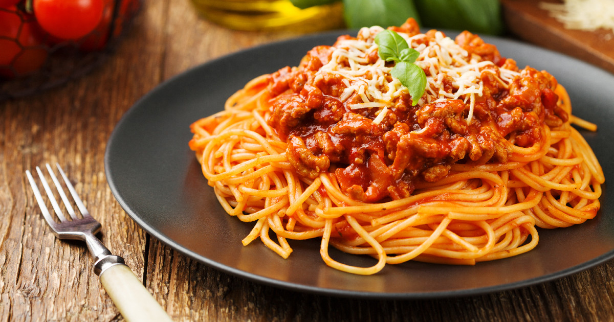

Spaghetti Bolognese

Spaghetti Bolognes one of the most if not the most popular pasta in the world!
Loved by people of all ages from kids to the elderly. Its tantalizing sauce combined
with the meaty delight will surely make its eater's tongue dance in joy!
Ingredients
- 1 package of spaghetti
- 1 pound lean ground beef
- 2 cans crushed tomatoes
- 1/2 cup freshly grated Parmesan cheese
- 1 Onion
- 3 cloves garlic, minced
Steps
- Cooked the spaghetti in boiled water around 12 minutes or until al dente
- Cook the onion and garlic in medium pot
- Add beef until cooked, around 8 to 10 minutes
- Pour the crushed tomatoes and simmer until boil
- Spoon the mixture over the spaghetti and top it with Parmesan cheese
Home